Grace's work on the area under curves and the integral +
Grace started work on on the area under on p. 245 in Don's worksheet book. He suggested she count the squares under the parabola y = x2 from x = 0 to x = 1, then find the ratio of the number of squares under the curve to the number of squares in the 1x1 square (below left). Grace found the number of squares to be about 34, so the area was 34/100. When Don asked her what simple fraction was this close to, she said 1/3. Don had Grace write "the area under the curve y = x2 from x = 0 to x = 1" as A0-1 x2 = 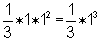. It would be easy to write 1 for 1*12 or 13 , but the square is 1 by 12 = 13 and writing it this way will show the pattern that follows.
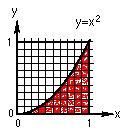 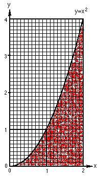
Grace counted the squares for the area from x = 0 to x = 2, above right. She found the area to be about 1/3 of the total area (2x4). So the area under the curve y = x2 from x = 0 to x = 2 is A0-2 x2 = 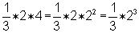. Looking at what she had up to that point,
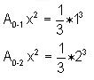
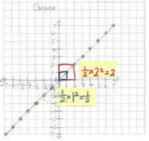
And she was able to generalize the area under the "curve" y = x from x=0 to x=x, as 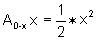. Looking at what she had she was able to generalize for any function xn , the area under the curve from x=0 to x=x would be 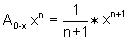. Using this Don asked Grace to do the problems on p. 246 of his worksheet book. A few days later Grace sent Don the following work as an attached file:
There were mistakes above, in #1, 2, 6, 11 and 12. Don sent the following to Grace to show her that the area under y = 4 is A0-x 4 = 4x
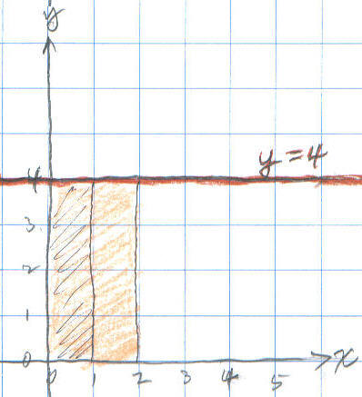
Don also sent the work below
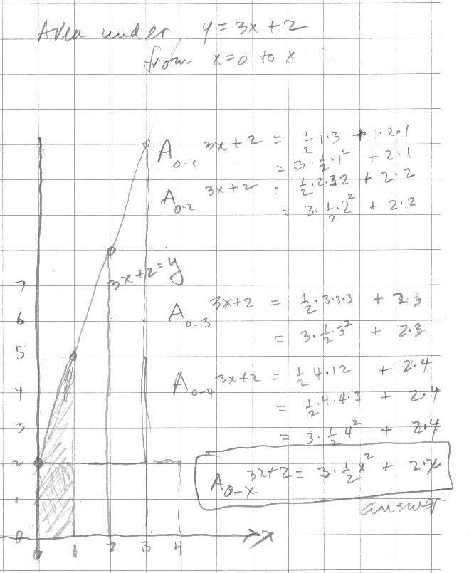
They talked about the problems she had on p.246.
Don showed Grace the following was his notation and the "normal" calculus notation:
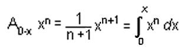
Nov. 26, '01 Grace sends Don the following as email attached file.
Grace's work on the infinite series with cookie-sharing follows:
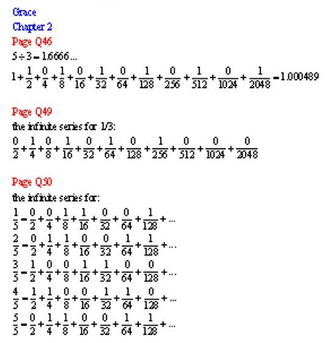
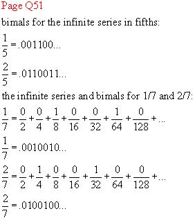
From Ch. 8:
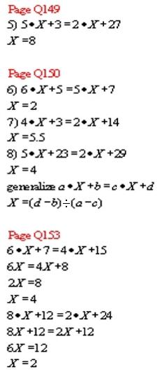
Nov. 26, '01 Don's email to Grace
Hi Grace!
Good to hear from you. I have been putting up your work on
my website. I'm not quite finished yet.
1. Have you done those integral problems from the calculus
book yet?
2. Would you like to try multiplying 1/3 x 2/7 as infinite
series (in binary). In my book you can see how I did 1/3 x 1/5 on p. 60. You can
check your work when you get an infinite series equal to 2/21, OK? It's a lot of
work, and I recommend you use graph paper to keep track of the partial products.
3. Would you please send me a corrected page of the
problems in my book on p. 246. (the yellow sheet you did it on 11/7/01)
4. What did you get for the number of squares under y=x^2
from x=0 to x=2?
5. Work on some iteration problems on p. 154 + (solve a
quadratic equation by iteration).
Fine work in ch. 2. A
couple of questions and suggestions:
1. 1 2/3 can't equal 1.000489...
2. 5/5 can't equal 0/2+ 0/4 + 1/8 + 1/16...
3. When you write the bimal, put a line over the repeating
part, like in the 1/5 and 1/7, OK? So it's easier to know what digits are
repeating.
4. On p. 52, if you share 5 cookies between 3 people and
use the special scissors that cut into 10 pieces each person would get 1 cookie.
There would be 2 cookies left over. Cut each into 10 pieces. You now have 20
tenths. Each of the 3 people would get 6/10 and there would be 2/10 left over.
Right now each person has 1 + 6/10 + . The 2 tenths have to be cut into 10
pieces...etc. Go from there, Grace.
5. What simple fraction equals this infinite repeating
bimal .00110 with these 5 digits repeating?
Take care. Say hello to everyone at home.
Grace sent her corrected versions of the problems on p. 246:
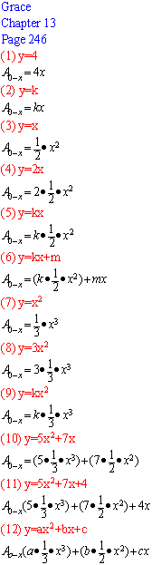
On Sunday, Dec.2, '01 Grace's parents brought her and her brothers back to Champaign to work with Don!
David, age 9, worked on graphs of x- y = 2, x- y = 4, and x- y = 6. He saw patterns in the graphs. He saw that the graphs went down 2, and realized if he graphed x- y = 3, it would go down 1 from x- y = 2. He was able to write 1 - -1 = 2 and 4 - -2 = 6 and understand it. David made the 7 soma cube pieces. He also drew the square numbers as Tara had done. He colored in the L shaped pieces (the differences in the square numbers). He wrote in on each line 22= 2x2 = 4, 32= 3x3 = 9 as he counted the squares on the graph paper. David also saw these about the odd and even numbers: odd + odd = even, even + even = even and odd + even = odd.
William, age 7, started on coloring in 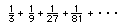He added 1/3 + 1/9 to get 4/9, and did up to adding the first 4 terms to get 1/3, 4/9, 13/27, and 40/81 as the partial sums. Don spent time with William on how many 1/3's make 1 and how many 1/9's make 1/3 and 1/3 of 1/3 = 1/9 and how to multiply 9x3, 27x3..lots of good arithmetic that he needed. He knew that the to get the bottom numbers one has to multiply by 3. He also worked on sharing 3 cookies between 2 people. He cut each cookie into 2 pieces, each 1/2, and each person got 3/2 or 1 1/2 cookies.
Grace, age 10
Don started Grace on iterating functions, after he gave her the test below.
Don gave Grace this test to start with:
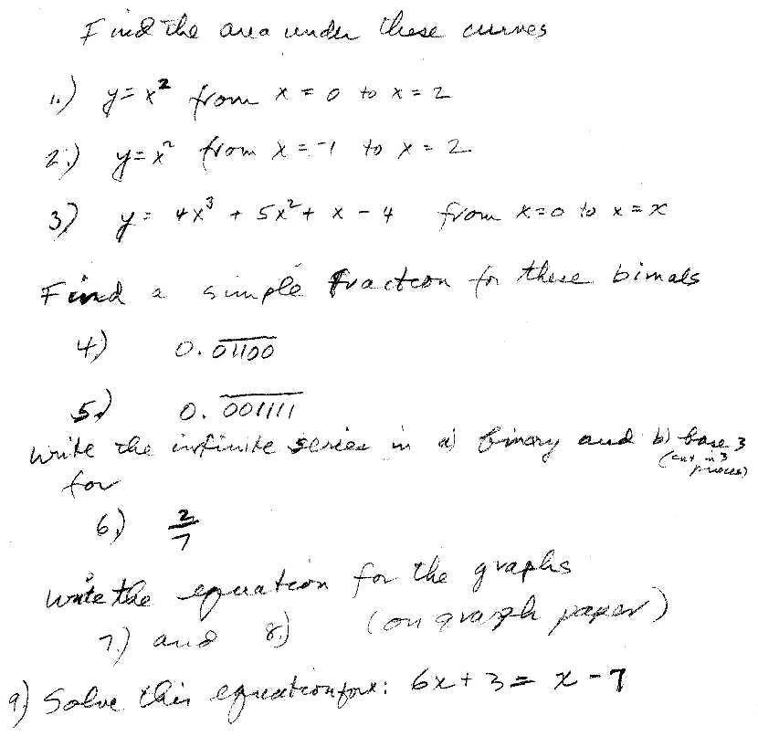
While at Don's house, she worked on this test. They went over the questions and
on Dec. 26, 2001 Grace sent all her test answers to Don:
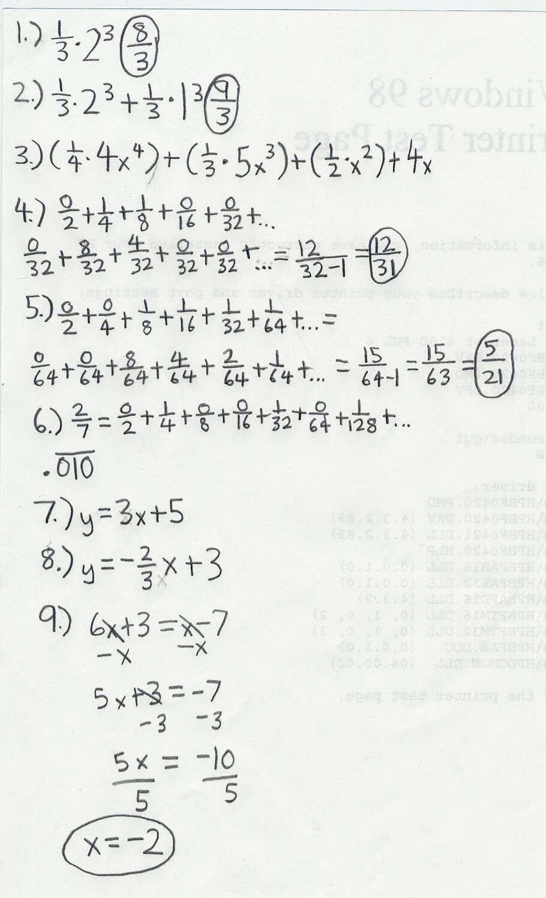
Dec. 26, 2001 Grace also sent the following email to Don:
Hi Don,
Attached is the work that we did at your house. There isn't
enough space to scan all of the work so I will send have to send the
iteration part later.
Grace
and in another email the same day,
Hi Don,
Merry Christmas and a Happy New Year!
My scanner still isn't working so I'm going
to scan the work at my mom's work place. I will send it later.
For the area under the curve from 0 to
b, the area would be 1/2 * b^2 - 1/2 * a^2. If I chose the function x^2, the
area would be 1/3*b^3 - 1/3*a^3.
At your house we stopped at the
iteration or feedback. Can we start from there?
Bye,
Grace
Dec. 26, 2001 Grace sent the following scan to Don
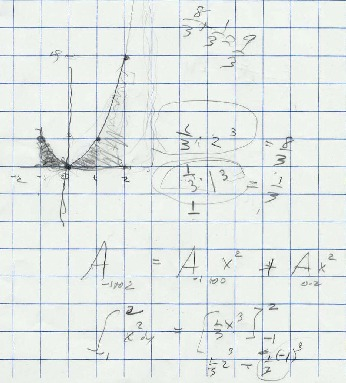
which is what they did at Don's house.
Dec. 26, 2001 Don's response to this email was:
Hi Grace,
I hope you all have a wonderful, peaceful, exciting New Year. Working with you
all, just knowing you, has made this year very special for me. Thank you.
I thought you would like that book.
I haven't looked at all the scans, but I'm working on it. Grace I don't
understand the statement "For the area under the curve from 0 to b,
the area would be 1/2 * b^2 - 1/2 * a^2." because we don't have the
function. For the function, if we use x^n, we could then write this as
A0-b x^n - A0-b x^n= (1/n+1)*b^(n+1) - (1/n+1)*a^(n+1).
But I agree with this part: "If I chose the function x^2, the area
would be 1/3*b^3 - 1/3*a^3." The if we take the problem on the test I
gave you, find the area under the curve y=x^2 from -1 to 2 , it would be
1/3*(2^3) - 1/3*(-1)^3 = 8/3 - (-1/3) = 9/3 = 3 which is what we did at my house
[ see above].
For the iteration of 7 + x/3 , you said it would go to 21. Try
starting with 3 and see where it goes. I get 3, 8, 29/3, and so on. You keep
this going. Don't round off on your calculator. The start with -100 and 1000 and
see what happens in each case. OK?
Go! Have a good holiday. You're out of school now 'til what, the 3rd of Jan.?
Bye. Don
Great work, Grace!!!
Dec. 26, 2001 Dear Don,
Attached is the iteration part that I couldn't send before.
Bye,
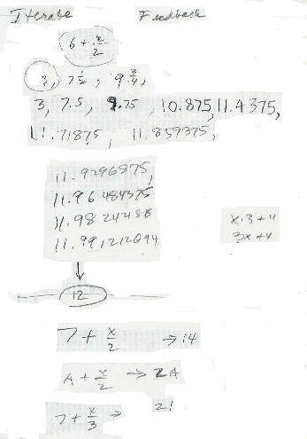
So Grace had the A + x/2 goes to 2*A fine. But 7 + x/3 look out! Tune in for Grace's work on this iteration problem.
Hi Don,
Attached is my work on the iteration.
After I tried to find out where 7 + x/3 went to, my guess
seemed wrong. 7 + x/3 didn't go to 21. It went to 10.5. I'm sort of confused.
.jpg)
Dec. 27, �01 Don emailed Grace
Hi Grace,
See you, Don
on Dec. 27, �01 at 03:14 PM, Grace emailed Don
Hi Don!
I tried 8 + x/3, 9 + x/3, and 10 + x/3 (attached).
I found out two things:
1. To find out where the mixed number goes to when the
denominator of the fraction is 2, multiply the whole number by 2.
2. When the denominator is 3, all I found out was that
as the whole number increases, it adds up by 1.5.
That's all I found out and I'm still confused.
Grace
on Dec. 27, �01 at 03:26 PM, Grace emailed Don
I found out what the pattern is!!!
a + x/3 -> 3 * a/2
Bye,
Grace
on Dec. 27, �01, at 10pm Don answered
Grace:
Great, Grace!
Now, what about a + x/b , what does this go to?!?
Bye, Don
on Dec. 28, �01, Grace emailed Don :
Hi Don,
a + x/b -> a/(b-1) *
b !!!
Attached is how I found that out.
Bye, Grace
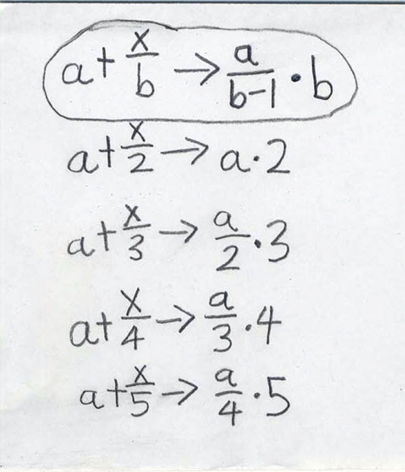
on Dec. 28, '01 Don emailed Grace:
Hi Grace,
Would you like to try multiplying 1/3 x 2/7 as infinite
series (in binary). In my book you can see how I did 1/3 x 1/5 on p. 60. You can
check your work when you get an infinite series equal to 2/21, OK? It's a lot of
work, and I recommend you use graph paper (1/4") to keep track of the
partial products.
See you, Don
on Dec. 29, �01, Grace emailed Don :
Hi Don,
Yes, I would like to try multiplying 1/3 * 2/7 as an infinite series. I will
start p. 60 soon. No, I never wrote the infinite series for 2/7 in base 3.
I will do this after p. 60.
Bye,
January 9, 2002 Grace emailed Don:
Hi Don,
After I did 12 lines instead of 7, I got
.000011112222333344445555...
I also found out that 1/30 is equal to
.000012000012000012....
But the part with all the numbers is still hard. I can do
the first four lines but I can't do the rest. I don't know how to add a zero
before the .0000000002 after I have .00001200022233334444...
I need help!!!!
Bye,
Jan. 9 Don emailed Grace :
Dear Grace,
1. You said: "After I did 12 lines instead of 7, I got
.000011112222333344445555... ". I don't quite agree with this..almost! The
first product in line 3 is 1/8*1/8= 1/64 which is .000001 and you only have 4
zeros. Everything else is ok.
2. You said: "I also found out that 1/30 is equal to
.000012000012000012...." . Now this can't be because you can't have a 2,
only 0's and 1's.
You're doing fine!!!
Bye, Don
See Grace's work on infinite series, cookie-sharing, graphing parabolas+.
See Grace's work on multiplying two infinite series!!
See Grace's ideas about teaching!
To
other students who come from out of town to study with Don
To
other discoveries
To order
Don's materials
Mathman home